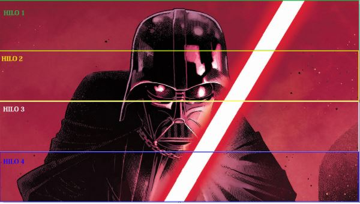

Wiki Computación Paralela
Efecto Blur
El efecto blur o de desenfoque hace referencia a hacer una imagen borrosa siguiendo algún tipo de procedimiento (Gauss) o simplemente un kernel, el cual en nuestro caso es un kernel en forma de cruz. Para lograr el efecto borroso se hace un promedio de los valores RGB de los píxeles que componen la cruz y este nuevo valor lo toma el píxel central de la cruz.
Figura 1
En la figura 1 podemos ver una sección de una imagen vista con mucho zoom donde podemos ver 9 pixeles, cada uno con un color, en este caso, para facilidad de la explicación, tienen colores puros R(red) G(green) y B(blue), siendo la representación de estos en valores RGB:
- R = (255,0,0)
- G = (0, 255, 0)
- B = (0, 0, 255)
En la figura se puede observar una cruz dibujada en amarillo, está cruz representa el kernel que se usará para el efecto de blur, en este caso, un kernel de tamaño 3, entonces para calcular el nuevo valor que tendrá la celda del centro, se deben sumar los valores RGB de las 5 celdas que se encuentran dentro de la cruz y luego dividirlo sobre 5, en este ejemplo al sumarlas tenemos un total de (255, 255, 765), luego si dividimos cada valor sobre 5, nos da un valor RGB resultante de valor: (51, 51, 153) (figura 2) que sería el nuevo color del píxel central que estábamos analizando.
Figura 2
Ejemplo del efecto blur:
Figura 3
Figura 4
En la figura 3 se puede ver la imagen original original y en la figura 4 la misma imagen después de aplicar el efecto de blur con un kernel de tamaño 11.
Paralelización
La paralelización hace referencia a la forma en que se pueden ejecutar varias instrucciones al mismo tiempo en un computador para poder resolver un problema, lo que se hace es dividir un problema grande en varios problemas más pequeños que se puedan solucionar simultáneamente. Para llevar a cabo este proceso es necesario tener un procesador con varios núcleos,(un núcleo se refiere a una unidad capaz de realizar procesamiento de instrucciones independientemente) sea en CPU o en GPU, si bien es cierto que en general entre más núcleos se puedan usar el procesamiento será más rápido, existen casos en que no se le pasa suficiente carga a cada núcleo y el proceso tiene a ser más lento en vez de más rápido.
¿Por qué paralelizar?
Como se mencionó anteriormente, para realizar el blur se operan los 3 valores de RGB y por ejemplo, en la imagen más pequeña que es de 720 x 720 píxeles se tienen en total 720*720*3=1555200 “casillas” sobre las cuales se debe hallar el promedio para el valor central de la cruz. Esto hace de la aplicación de blur un proceso que requiere bastantes operaciones y justifica la paralelización de este algoritmo, hay que tener en cuenta que solamente se está hablando de la imagen más pequeña.
Implementaciones
Se implementó el algoritmo de blur de tres formas diferentes con el fin de realizar una comparación en los tiempos de ejecución con diferentes formas de paralelización en CPU y en GPU. Para trabajar con las imágenes se utilizó la librería de C++ OpenCV, que facilitó el cargar la información de la imagen para trabajar sobre el RGB de cada píxel junto con el crear y guardar la nueva imagen con el efecto blur ya aplicado.
Algoritmo en CPU con POSIX (threads):
En primer lugar se implementó el algoritmo con POSIX y sus threads, haciendo la división de carga respecto al alto de la imagen y con base en el número de hilos sobre los que se decida correr el algoritmo. Es decir si son 4 hilos el alto se parte en 4 y cada hilo trabaja sobre la parte que le corresponde; al final cada uno de los hilos espera a que los demás terminen de procesar su respectiva parte y luego guardan la nueva imagen con el efecto blur.
Figura 5, ejemplo división de carga con dos hilos
Figura 6, ejemplo división de carga con cuatro hilos
Algoritmo en CPU con OpenMP:
Para la implementación del algoritmo con OpenMP se usa una base del mismo algoritmo usado en POSIX pero utilizando las facilidades para anidamiento paralelo que ofrecen OpenMP con schedule estático que hace una división de carga del alto de la imagen sobre el número de hilos con los que se corre el programa, los mismos ejemplos (Figuras 5 y 6) aplican para OpenMP.
Algoritmo en GPU con CUDA:
Sumado a las anteriores implementaciones esta se hace sobre GPU haciendo uso de una tarjeta NVIDIA y de su arquitectura para cálculo paralelo CUDA. En está implementación fue necesario dividir la carga de manera diferente, debido a la capacidad de la memoria compartida con la que se cuenta en la tarjeta gráfica, por eso, en este caso se realiza el proceso primero en cada fila de pixeles y luego en cada columna, dividiendo el número total de píxeles de la fila o columna entre el número de hilos por el número de bloques; Es decir, si la imagen tiene 720 píxeles de ancho y deseamos ejecutar el programa con 192 hilos en 2 bloques, realizamos la cuenta anteriormente dicha 720/(192*2)=1.8, aproximamos a 2, esto quiere decir cada hilo deberá realizar el trabajo en 2 píxeles por cada fila de la imagen, luego se realiza el mismo proceso pero por columnas.
Instrucciones para la ejecutar los programas
Para poder ejecutar los programas es necesario tener un sistema operativo linux ya sea Debian, Ubuntu, Fedora, etc. Es necesario tener instalada la librería OpenCV (instrucciones aqui: http://milq.github.io/install-opencv-ubuntu-debian/ ), para el programa de CUDA es necesario tener una tarjeta gráfica NVIDIA y tener instalado CUDA tool-kit (https://developer.nvidia.com/cuda-downloads)
-
Clonar el repositorio de github siguiente:
https://github.com/lfvalderrama/Blur-Effect -
Ingresar a alguna de las carpetas de la figura 7:
Figura 7
-
Modificar las variables dentro del archivo run.sh (figura 8) segun lo qué se quiera probar, las imágenes se deben encontrar dentro de la carpeta de la implementación a probar.
Figura 8
-
Abrir una terminal, y ejecutar el run.sh
Figura 9
- Finalmente en la carpeta de la implementación se encuentra la imagen modificada con el efecto blur.